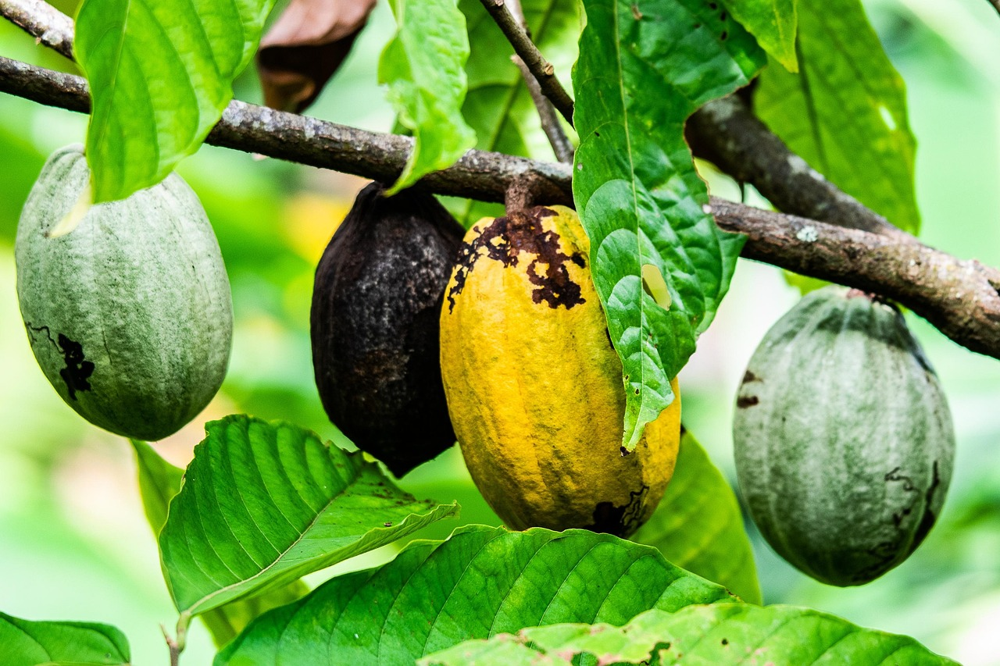

The Rich History of Cocoa
Ancient Mesoamerican Origins
The story of cocoa begins over 3,000 years ago in the tropical rainforests of Central and South America. The ancient Olmec civilization was likely the first to cultivate cacao trees and create chocolate beverages.
The Maya and Aztec civilizations held cocoa in extremely high regard. They believed it was a gift from the gods and used cocoa beans as currency. The Aztec emperor Montezuma reportedly drank dozens of cups of chocolate daily.

Chocolate Arrives in Europe
When Spanish conquistadors arrived in the Americas in the 16th century, they encountered cocoa for the first time. Hernán Cortés brought cocoa beans back to Spain, where chocolate quickly became popular among the aristocracy.
The Industrial Revolution and Modern Chocolate
The 19th century brought revolutionary changes to chocolate production. In 1828, Dutch chemist Coenraad van Houten invented the cocoa press, which separated cocoa butter from cocoa solids. This innovation made chocolate more affordable and easier to produce.
In 1847, British company J.S. Fry & Sons created the first solid chocolate bar. Later, in 1875, Swiss chocolatier Daniel Peter added condensed milk to chocolate, inventing milk chocolate as we know it today.